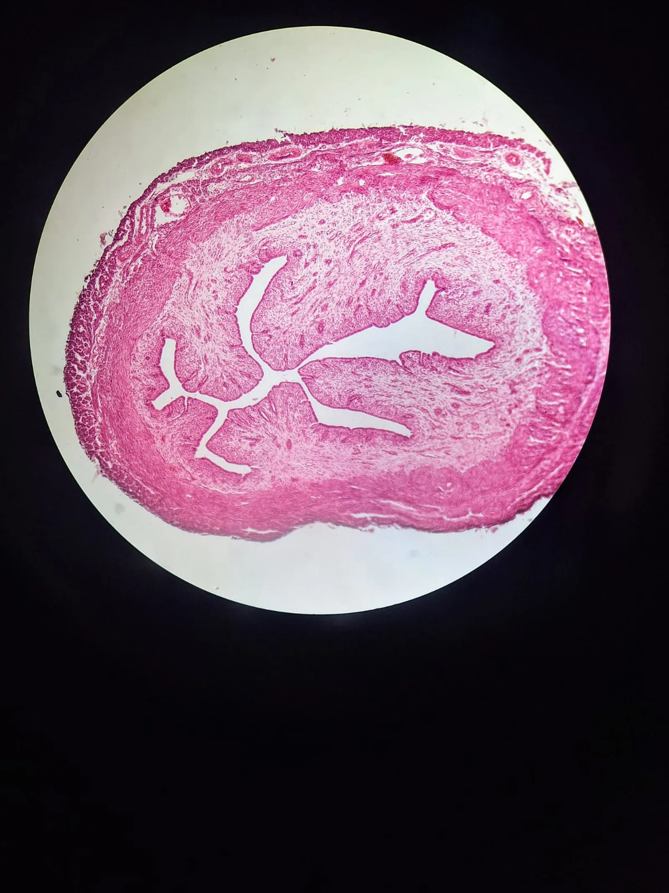

Lâmina 70 · Sistema reprodutor
Útero

Toque na imagem para ampliar. No computador, use as setas do teclado para trocar de imagem.
Lâmina 70 · Sistema reprodutor

Toque na imagem para ampliar. No computador, use as setas do teclado para trocar de imagem.